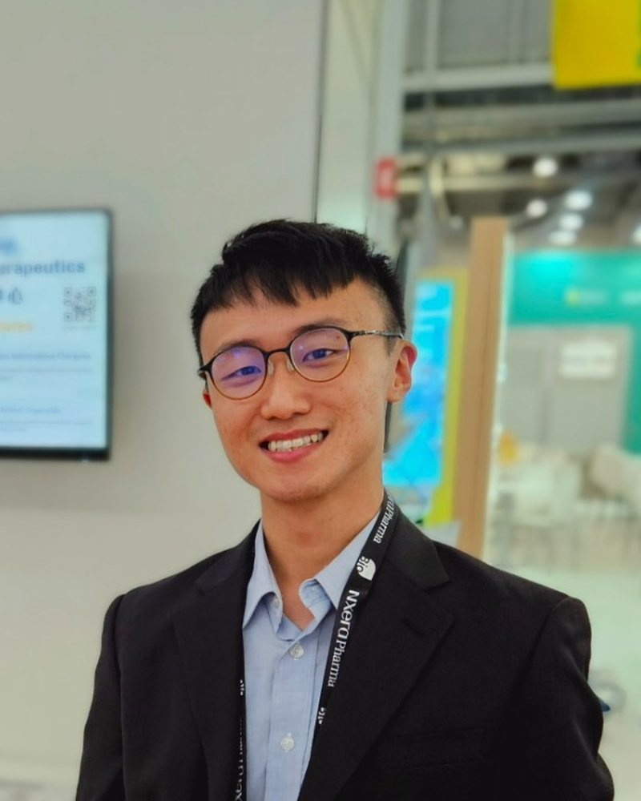
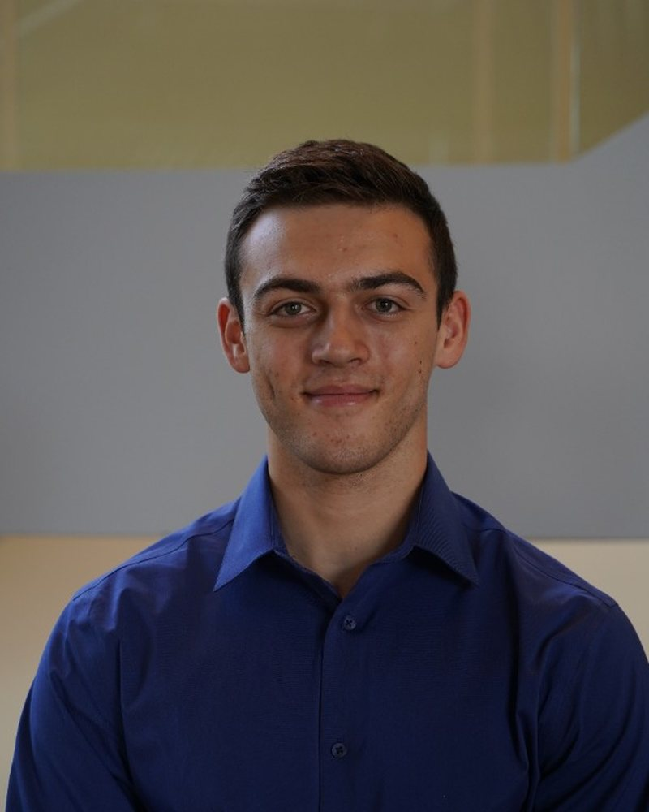

The pilot cohort of the Hypothesis-to-Evidence Grant is Joy-Yan Lam, PhD, and the team of Alexander Reading and Daniel Pascal. Each project starts from a computational result and ends in a measurement a model cannot produce: a wet-lab assay, sourced through Litmus Science, with the hypothesis and protocol developed in K-Dense Web. A native MCP connection between K-Dense Web and Litmus Science links the software layer to the lab, so an approved protocol moves from the agent to quotes and execution without leaving the workflow.
The grant covers up to $5,000 of lab work per project. Fellows keep their data and intellectual property, and each project becomes a public case study once there is a result, with the fellows credited by name. We described the partnership behind the program in K-Dense Web and Litmus Science: Closing the Loop from Hypothesis to Experiment.
Joy-Yan Lam, PhD

Sponsored project
Disease-modifying compound discovery in Chinese medicine decoction for Parkinson’s disease
Joy-Yan Lam, PhD, is a Research Assistant Professor at the University of Hong Kong, in the Centre for Virology, Vaccinology and Therapeutics. His primary project is a protein-based nasal vaccine against respiratory viruses. The grant project sits beside that work: he is looking for active molecules in a traditional Chinese medicine formula used for Parkinson’s disease. More than 10 million people live with Parkinson’s disease, and projections put that above 25 million by 2050. No approved treatment slows its progression.
The project is personal. The formula has a documented record of reversing symptoms in Parkinson’s patients, including a close relative of Lam’s, and he wants to know which molecules are responsible. His hypothesis is that therapeutic molecules in the formula can reverse Parkinson’s motor symptoms. He will use K-Dense Web to turn the mass spectrometry results into a compound-target map and a protein-protein interaction network, then choose candidates from the hub genes. The experiment he proposed is an in vitro screen of that list, scored on neuronal survival and inflammatory gene expression. If nothing in the extract is active, the useful conclusion is that the compound is missing from the water-soluble fraction, or that it is lost during processing.
Alexander Reading and Daniel Pascal

Grant project
Targeted protein degradation has never been extended to fungi. Alexander and Daniel are running the binding experiment that tests the first requirement for designing this new class of antifungals: small-molecule engagement with a protein-disposal component that fungi have.
Alexander Reading and Daniel Pascal are Biological Engineering PhD students at MIT, and they are working on this project as a team. Pascal’s thesis work involves engineered therapeutic probiotics, among them a strain that targets and kills microbial pathogens. Reading is completing his thesis on genetically engineering yeast, with a focus on understanding protein translation.
Invasive fungal infections kill an estimated 2.5 million people a year, yet clinicians have only four classes of antifungal drugs, and resistance is emerging against all of them. Alexander and Daniel are testing whether a molecule designed to bind a human protein can also bind its counterpart in pathogenic fungi: the first step toward a drug that would turn the fungus’s own protein-disposal machinery against it. The approach, targeted protein degradation, came out of cancer research. A degrader molecule hands a chosen protein to the cell’s own disposal system, and the cell destroys it. The idea has since moved into work on viruses and bacteria but not yet fungi.
Structural analysis in K-Dense Web found that the site where the molecule binds the human protein is largely preserved in the fungal version, even though the rest of the structure diverged over time. Whether that holds in practice is now the question: using Litmus Science’s platform, they will execute the experiment to measure how strongly the molecule sticks to the fungal protein. Whether it binds, and how tightly, is the first requirement for designing this new class of antifungals.
What happens next
Lam, Reading, and Pascal are using K-Dense Web to settle the evidence base and the protocol. Litmus Science will then return lab quotes and run the approved experiment. We will write up each project as a case study when the data are in.